Spesialis Motor Cruiser V-Twin, Custom Chopper & Bobber, Servis Mesin, Fabrikasi Part, hingga Bangun Motor dari Nol di Arcamanik Bandung.
Logo resmi merk motor yang kami tangani di workshop Eiruby 71:
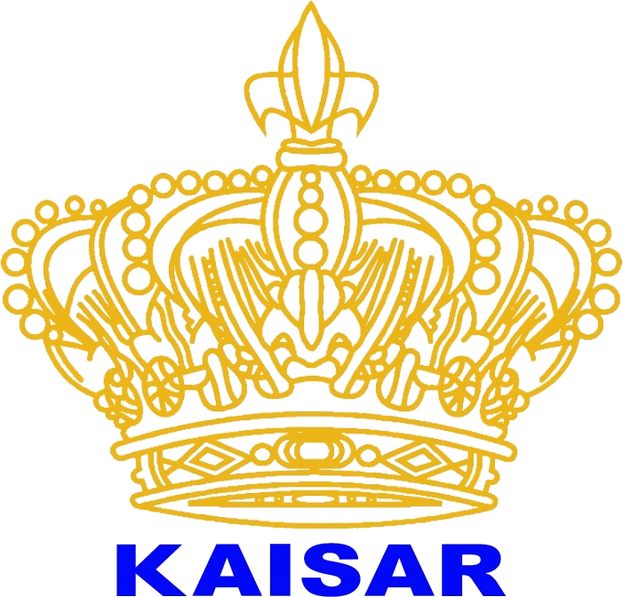
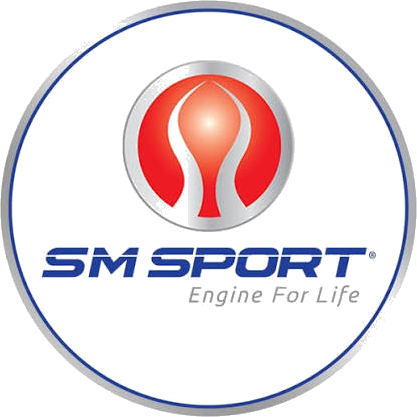
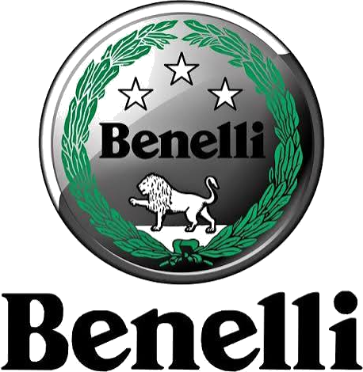
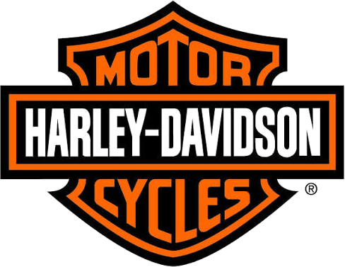
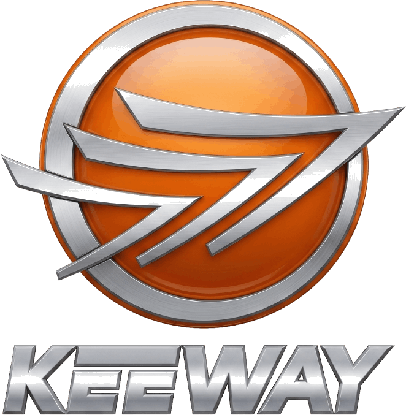
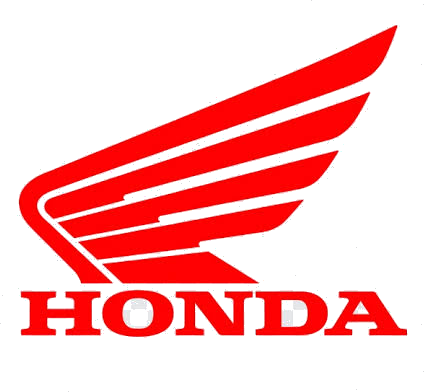
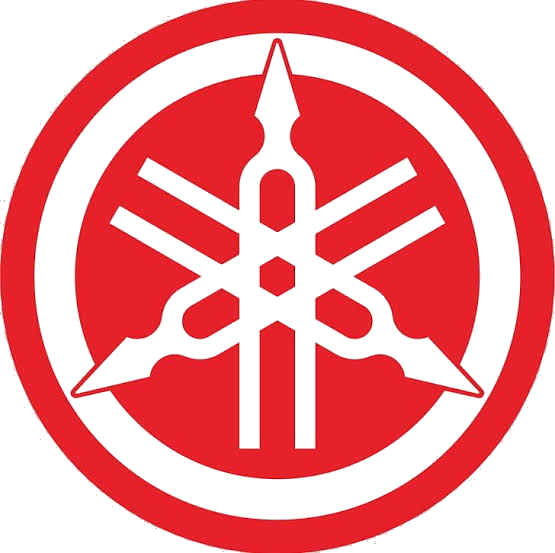
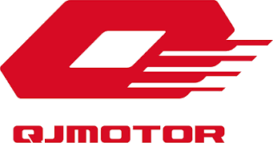
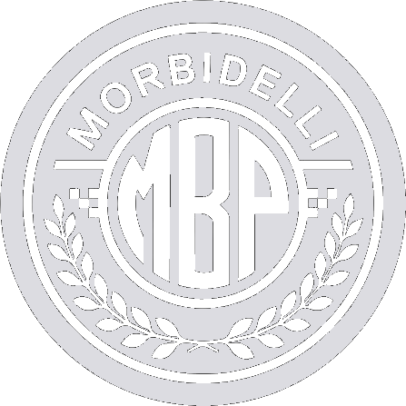
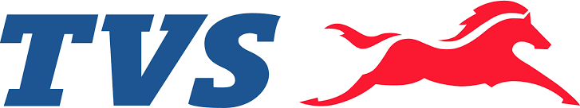
Overhaul mesin V-Twin, sinkron karbu ganda, perbaikan kompresi bocor, custom knalpot dual pipa blar, dan sedia part langka Ruby.
Perawatan mesin injeksi/karbu V-Twin SM V16, drop seat custom, tangki peanut handmade, perapihan kelistrikan kabel tersembunyi.
Spesialis suara moge 2 silinder Patagonian Eagle & Motobi 200. Custom knalpot stereo padat, ganti stang, dan servis rutin berkala.
Perawatan dan kustomisasi motor bermesin V-Twin besar: Sportster, Dyna, Softail, modifikasi stang tinggi (ape hanger), dan sissy bar.
Tune up mesin belt drive Keeway V250, custom spakbor belakang minimalis, ganti knalpot blar, dan setting injeksi harian.
Bangun custom basis CB, Tiger, Mega Pro, Phantom cruiser, atau bebek klasik. Bikin rangka rigid chopper atau scrambler tangguh.
Basis mesin favorit custom: Yamaha Scorpio 225 & Byson. Ubah jadi Chopper skinny, Bobber ban gambot, atau Bratstyle cafe racer.
Penyempurnaan karburator W175 yang sering brebet, modifikasi tangki, ganti jok kulit custom, dan servis berkala seri Vulcan.
Perawatan mesin modern V-Twin QJ Motor, custom posisi riding footstep maju (forward controls), dan upgrade peredam getaran.
Servis kelistrikan, setting kaki-kaki, tune up mesin V-Twin, dan penyesuaian aksesoris touring untuk kenyamanan jarak jauh.
Custom retro scrambler basis TVS Ronin, custom bracket tas samping, knalpot stainless steel kustom, dan servis berkala.
Suzuki, Royal Enfield, Triumph, motor roda 3, atau motor klasik lainnya? Bawa ke workshop, kita bedah bareng!
Dari servis tune up mesin, fabrikasi part manual, bangun motor custom dari nol, hingga cat mewah tahan bensin.
Servis berkala, overhaul total, sinkronisasi karbu ganda mesin V-Twin, perbaikan kompresi bocor, ganti oli, dan instalasi kelistrikan aman dari korslet.
Membangun motor aliran Chopper, Bobber, Scrambler, Bratstyle, Cafe Racer, sasis rigid, stang Ape Hanger, dan knalpot custom dual blar.
Fabrikasi manual part logam: bubut, bracket custom, tangki bensin handmade, sissy bar belakang jangkung, adapter gir, dan part yang sudah tidak diproduksi lagi.
Mulai dari merancang geometri sasis/rangka pipa, pasang mesin gelondongan, tangki kustom, kabel tersembunyi, hingga motor jadi utuh dan siap mengaspal.
Pengecatan tangki, spakbor, dan rangka. Pilihan cat solid, metallic flake, candy tone berkelas, motif pinstripe klasik, dan finishing mengkilap tahan bensin.
Menghidupkan kembali motor bahan yang sudah lama mati atau mangkrak. Restorasi original look atau retro modern siap touring jarak jauh.
Sharing santai sebelum mulai garap. Diskusi desain referensi, part apa saja yang pas dengan budget kamu, tanpa biaya estimasi tersembunyi.
Sebagai layanan sampingan, om juga siap bantu perbaikan plat bodi keropos, cat ulang, dan penyegaran mesin mobil tua/klasik kesayanganmu.
Dokumentasi langsung dari workshop Eiruby 71 di Arcamanik Bandung.
Tonton langsung suasana pengerjaan motor di workshop Eiruby 71 Arcamanik Bandung. Review mesin V-Twin, setting suara knalpot, dan sharing perawatan motor custom.
Overhaul mesin V-Twin, knalpot dual pipa custom blar, dan setting karbu sincron.
Rangka custom drop seat, tangki peanut handmade, sissy bar jangkung.
Perbaikan plat keropos, repaint total, dan penataan kelistrikan mobil klasik.
Semua pengerjaan difokuskan langsung di workshop garasi kami dengan peralatan lengkap, presisi, dan teliti. Silakan bawa kendaraanmu untuk kami cek langsung!
Jl. Golf 1 No.94, Bina Harapan, RT.2/RW.11, Cisaranten Kulon, Kec. Arcamanik, Kota Bandung, Jawa Barat 40293
Petunjuk Arah Google MapsSenin – Minggu: 08.00 – 18.00 WIB
Konfirmasi via WhatsApp sebelum datang agar om bisa siapkan slot pengerjaan.